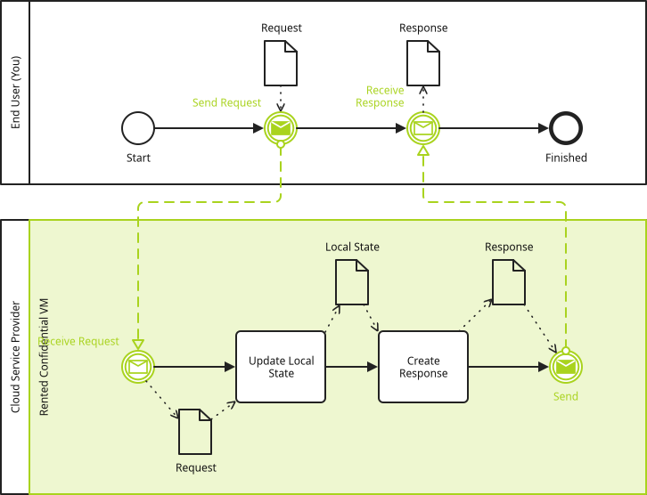
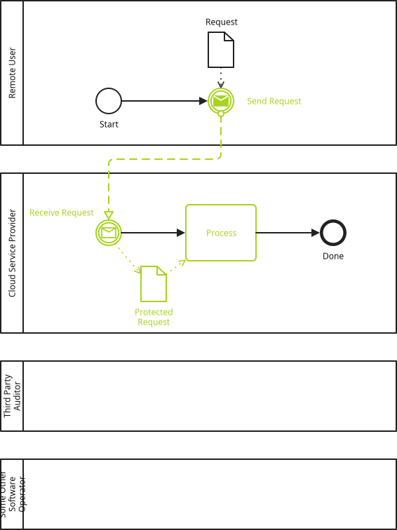
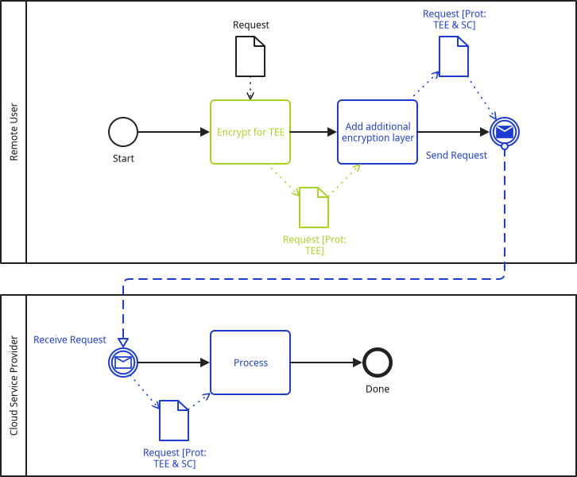
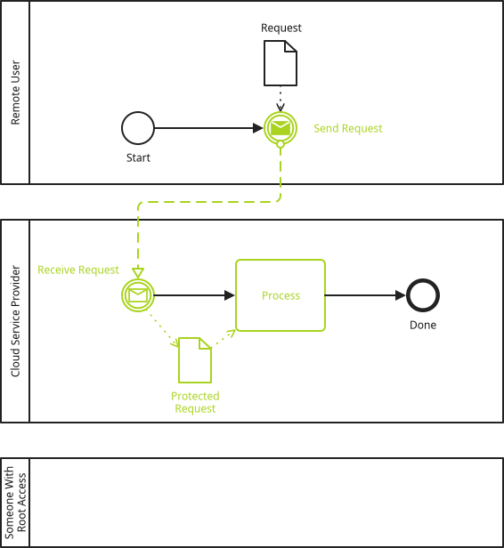
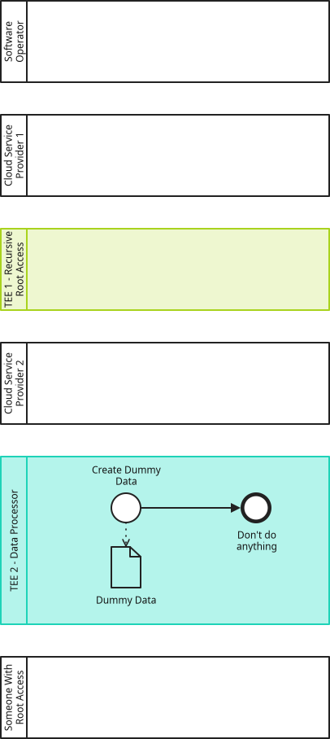

Trusted Execution Environments
I welcome you on this page about modeling TEEs within PE-BPMD! At this location it would be logical to write a lengthy explanation about what TEEs are. A short description is already in the PE-BPMD introductory page. But a lengthy overview, which doesn’t go too much into implementation details, exists already, and I am sure that I cannot create a better version here. I was the main author of Chapter 3 of D2.1 - Technology Survey and Analysis for the JOCONDE project. My goal with that text was exactly to not go too much into technical details, but still cover many topics. There is also a lecture where I talked about TEEs: https://courses.cs.ut.ee/2025/secprog/spring/Main/Lectures 9. Sandboxing. In the following text I assume that you read the referenced texts.
The following sections explain the various attributes and pitfalls through examples.
An Example
This is a typical use case of confidential computing. You want to process sensitive data in the cloud. Hence you rent a confidential VM (e.g. using Intel TDX or AMD SEV-SNP), and then use that to process you business secrets. You send the business secrets directly to the VM and receive the processing results directly from the VM, and the cloud service provider should not see the data.

The coloring of the lane and the edges can be configured. Since the primary purpose of PE-BPMD is to communicate the impact of planned technologies to readers of the diagram, these changes should stand out visually, like with a git diff. But this is just my take, and you are free to omit the coloring attributes to have no coloring applied.
| Pool | Request | Local State | Response |
|---|---|---|---|
End User (You) |
V |
A |
V |
Cloud Service Provider |
P |
P |
P |
Network |
H |
H |
This visibility table is the other output of the PE-BPMD analysis, meant to succinctly summarize to what level a given piece of data is protected.
This visibility table has all categories present.
The later sections explain why the A and P entries are created (the V, H and entries are not TEE specific).
But as you can see, the request and response data is only directly visible to the end user (and the TEE which itself is not listed in the visibility table). Other pools either need to do extra work to access the data (P) or realistically don’t have access to the plaintext (H and ).
= End User (You)
# Start
# Send Request
# Receive Response
. Finished
= Cloud Service Provider
== Rented Confidential VM
# Receive Request
- Update Local State
- Create Response
. Send
OD Request ->user-send
& Request <-cvm-receive ->cvm-update
OD Local State <-cvm-update ->cvm-create-reponse
OD Response <-cvm-create-response ->cvm-send
& Response <-user-receive
MF <-user-send ->cvm-receive
MF <-cvm-send ->user-receive
[pe-bpmd
// TEE type (lane, pool or tasks)
(tee-lane @cvm)
// Protection channel starts and ends
(tee-in-protect @user-send @user)
(tee-in-unprotect @cvm-receive)
(tee-out-protect @cvm-send)
(tee-out-unprotect @user-receive @user)
// Additional access characteristics.
(tee-external-root-access @user)
(tee-hardware-operators on-premises)
(tee-software-operators @csp)
// Generic attributes
(stroke-color #a9d31e)
(fill-color #eef7d0)
](tee-lane @lane-id)-
This example uses the lane variant of the TEE extension. This means that all of the tasks within this lane are part of the TEE and thus protected. The physical operator of the TEE instance is clearly designated by the enclosing pool.
You can also use the pool (
(tee-pool @pool-id)) or tasks ((tee-tasks @task-1 @task-2 …)) variant, as shown in later examples. In the example at hand, modeling the TEE as a lane makes the most sense, since we want to explicitly see what is happening inside of the TEE. What is happening inside of the TEE is in a way the "meat" of the process. If the internal workings of the TEE are less relevant in the larger business process, the tasks variant makes more sense.
Note: Within the visibility table only names of pools are listed. Atee-poolwill also be part of the visibility table, whereas thetee-laneandtee-tasksvariants will not. (tee-in-protect @node-id @pool-id|no-rv)and(tee-in-unprotect @node-id)-
Both can appear multiple times. These are the starts and ends of the incoming protection channels.
tee-in-protect @node-id @rv-creatordesignates that data is protected at@node-id, where@node-idshall not point to a node within the TEE.@rv-creator(or alternatively the fixed stringno-rv) references the pool which created the reference value. This is explained in more detail in a separate section. The data to protect is detected automatically by analysing which semantic data element visually enters and leaves the given node, or visually moves across a message flow. For all the data that is protected viatee-in-protectnodes, their protection is removed when graph traversal reaches atee-in-unprotectnode. In the given example,Requestis protected and then unprotected by the send and receive events, and it is visually explicitly modeled that it enters the send event and leaves the receive event. One can follow the flow of data with a finger across message flows and data associations. (tee-out-protect @node-id)and(tee-out-unprotect @node-id @pool-id|no-rv)-
Similar to the
invariants, but this is the out direction. Hence fortee-out-protect, the@node-idmust reference a node within the TEE, andfor `tee-out-unprotect @node-idthe@nodeidmust reference a node outside of the TEE. (tee-external-root-access @pool-id)-
This attribute must always be present and either takes a
@pool-idor the fixed stringblockedwhen there is no root user. It says whether someone can usesshto become a root user on the target machine (or something conceptually similar). That user then has access to all files which the TEE sees. More in this section. (tee-hardware-operators on-premises|@pool-id-1 @pool-id-2 …)-
The TEE is running on some physical server (at least this is what I last learned about TEE technology). And this physical server is operated by someone, some pool. This could in principle also be some joint operation (or at least access), if you rent a physical rack space in a data center and visit it yourself physically from time to time. For
tee-tasksandtee-laneyou can use theon-premiseskeyword to use the containing pool as the hardware operator. Fortee-poolyou must specify at least one ID. (tee-software-operators @pool-id-1 @pool-id-2)-
Those are usually system administrators: Those who have virtual access to the hosting environment of the TEE. Could be the administrator who accesses the remote VM via
sshto start, restart, stop, etc., the VM, or the one who runs the Kubernetes commands to do the same.
Someone who acts as a system administrator within the TEE should be listed within thetee-external-root-accessproperty.
Importance of the Reference Value
A user which sends data to a service within a TEE by performing remote attestation, deriving a session key during that process, and encrypting the data with the session key or a further data encryption key that is in one way or another securely connected with aforementioned session key (further this is abbreviated as just sending data to the TEE as the full sentence is quite a mouthful) can use the mechanisms of remote attestation to verify that the service within the TEE is trustworthy. TEEs provide some means of hashing the software which they run (the specifics are different for every TEE technology, but the purpose is the same). A user could calculate the hash of and audit the software which they expect to run in the TEE (this is further referred to as deriving the reference values), and then compare their version of the hash against what they are presented with during remote attestation. In practice, this task of deriving the reference values is very involved and requires profound competences in the fields of cybersecurity and related fields. However, most users usually have competences in other areas (how about you, or your neighbour, or your doctor?) and hence cannot perform this task. So auditing the software and calculating the hash is in the best case outsourced to some trusted third party, or just omitted in the worst case. All of these variants can be modelled with the PE-BPMD extension.
User-Generated Reference Values

| Pool | Request |
|---|---|
Remote User |
V |
Cloud Service Provider |
P |
Third Party Auditor |
|
Some Other Software Operator |
H |
Network |
H |
= Remote User
# Start
. Send Request
= Cloud Service Provider
# Receive Request
- Process
. Done
OD Request ->user-send
& Protected Request <-csp-receive ->csp-process
MF <-user-send ->csp-receive
= Third Party Auditor // Relevant in subsequent examples.
= Some Other Software Operator // Primarily for showing what changes in the visibility table
[pe-bpmd
// For conciseness, the TEE is represented by just that one activity.
(tee-tasks @process)
// In this simple example, data only flows into the TEE.
// Note that there is no tee-in-unprotect, as tee-tasks are implicitly unprotection nodes.
(tee-in-protect @user-send @user) (1)
// Additional access characteristics.
(tee-external-root-access blocked)
(tee-hardware-operators on-premises)
(tee-software-operators @user @csp @some-other-so)
// Generic attributes
(stroke-color #a9d31e)
(fill-color #eef7d0)
]| 1 | @user says that the user themselves calculated the reference values. This is the only value that is changed in the subsequent examples. |
If the client has the required competence to undertake this process, then this is in general the most secure way to go. This does not exclude that the user could upload their calculated reference value to a public data store, where other users can crosscheck it, which could further improve the security, depending on the context.
However, users usually have competences in areas other than cybersecurity and white hacking, hence this is likely not what you will use in your modeling.
Sidenote: This example uses the tee-tasks statement. For this, there do not exist tee-in-unprotect nor tee-out-protect statements, as this is all hidden within the TEE tasks.
These TEE tasks form black boxes and we just assume that data with TEE protection is unprotected in there (and vice versa for the output).
This also means that only in this case it is not necessary to visually model the unprotected data within the TEE.
Trusted Third Party
| Pool | Request |
|---|---|
Remote User |
V |
Cloud Service Provider |
P |
Third Party Auditor |
|
Some Other Software Operator |
H |
Network |
H |
(tee-in-protect @user-send @tpa) (1)| 1 | @tpa refers to an organization which is neither a software operator nor a hardware operator of the TEE. |
The visibility table is the same as for the User-Generated Reference Value case. This is in a way misleading, as this leaves out the threat that e.g. an attacker could bribe the trusted third party to report a wrong reference value to the end user that performs remote attestation. Obviously this would make the trusted third party an untrusted third party if the bribe would be uncovered, and thus might be considered unplausible, but having the potential threat visible in a table would at least present the possibility to explicitly discuss and exclude this threat (afterall, this is meant as a communication tool).
This could be solved by a hypothetical collusion table which would say, for each piece of data, whether something could be accessed if two or more pools would work together. This is not present and not currently in the pipeline, but I might come around some day implementing it if people like the PE-BPMD stuff.
Software Operator
| Pool | Request |
|---|---|
Remote User |
V |
Cloud Service Provider |
P |
Third Party Auditor |
|
Some Other Software Operator |
A |
Network |
H |
(tee-in-protect @user-send @other-software-operator) (1)| 1 | @other-software-operator refers to a pool which is a software operator for the given TEE. |
The visibility table now displays an A for the other software operator.
This is the case because they could in principle put malicious software into the TEE and use that as the basis for the reverence value calculation. I.e. they would tell the end user to trust the malicious software. Since they are the software operator for the TEE, they can just forward network requests of the remote user under attack to the malicious TEE software, which the user will then happily communicate with (afterall, they use the reference value of that malicious software within the TEE).
You might have an urge to comment that this can easily be detected by having audit logs for all kinds of actions, and other great protections.
If you implement those protections to prevent, or at least uncover, this attack (especially thanks to the table reminding you that there is a problem), then that is good!
You can communicate this with the table: "We see an A here, and to protect against this, we do this and that, which is, for the protection level we target, a sufficient countermeasure."
Hardware Operator
| Pool | Request |
|---|---|
Remote User |
V |
Cloud Service Provider |
A |
Third Party Auditor |
|
Some Other Software Operator |
H |
Network |
H |
(tee-in-protect @user-send @csp) (1)| 1 | @csp refers to a pool which is a hardware operator for the given TEE. |
This elevates the former P to an A, with the same resoning as for the previous software operator example.
The hardware operator likely controls the network traffic and could just route the user traffic to another machine with the malicious software in a TEE, or likely do many other clever things.
And again, for the context you operate in, you can then communicate your planned countermeasures.
No Reference Value
| Pool | Request |
|---|---|
Remote User |
V |
Cloud Service Provider |
A |
Third Party Auditor |
|
Some Other Software Operator |
A |
Network |
H |
(tee-in-protect @user-send no-rv) (1)| 1 | no-rv says that the user ignores the hashes received from the TEE. It blindly trusts that it talks to the correct software. |
This gives all of the hardware operators and software operators the chance to mount an attack.
Wrong Analysis Table With Unrealistic Protection
The reference value analysis is performed directly on the node where the protection is applied. Let’s look at a slight modification of the previous examples which results in a wrong visibility table to understand what that means:

= Remote User
# Start
- Encrypt for TEE
- Add additional encryption layer
. Send Request
= Cloud Service Provider
# Receive Request
- Process
. Done
OD Request ->encrypt-for-tee
& Request [Prot: TEE] <-encrypt-for-tee ->add-additional
& Request [Prot: TEE & SC] <-add-additional ->user-send
& Request [Prot: TEE & SC] <-csp-receive ->csp-process
MF <-user-send ->csp-receive
[pe-bpmd
// For conciseness, the TEE is represented by just that one activity.
(tee-tasks @process)
(tee-in-protect @user-encrypt-for-tee no-rv)
// Additional access characteristics.
(tee-external-root-access blocked)
(tee-hardware-operators on-premises)
(tee-software-operators @user @csp)
// Generic attributes
(stroke-color #a9d31e)
(fill-color #eef7d0)
]
[pe-bpmd
(secure-channel @add-additional post-received) (1)
(stroke-color #1d3cd4)
(fill-color #a2b0f2)
]| 1 | post-received means that the end of the secure channel is not present within this diagram, i.e. the TEE only sees the ciphertext. |
We see that after encrypting the request for the TEE, we encrypt the encrypted request again via a secure channel.
However, the secure channel is modelled in a way that it does not end in the TEE, i.e. the TEE cannot decrypt the inner request (due to the outer additional protection layer).
Based only on this model we must assume that the Cloud Service Provider will also be presented with this additional protection layer and should have AH (or HA, order doesn’t matter).
However, in the following table we see that it just says A:
| Pool | Request |
|---|---|
Remote User |
V |
Cloud Service Provider |
A |
Network |
HH |
The reason is that the analysis around the reference value only looks at the current protections at the node where data was protected for the TEE.
The reason is that the ultimate goal is that PE-BPMD supports a modelling approach where the whole business process is modelled in smaller sub diagrams.
This could then result in the situation that the encryption happens in one diagram, and the decryption within the TEE in another diagram.
That second diagram however would not have the (tee-in-protect @node @crucial-piece-of-info) statement present, since this is not part of this diagram.
Hence in a split-diagram situation, an analysis that would look at the full way from tee-in-protect to tee-in-unprotect would not work at all.
Therefor, we just look at the tee-in-protect side.
The assumption is, that a practical process will not add further protection in order to prevent the TEE from accessing data that was precisely encrypted for that TEE.
I can imagine that someone could come up with a use case for that (some private anonymised IDs maybe, if deterministic encryption is used), but this seems like a situation where PE-BPMD is too high-level anyway.
Anyway, in other words, the assumption is that if something is encrypted for a TEE, then it will reach the TEE through the controlled perimeter of the hardware and software operator in the given form as it was present when TEE encryption was applied.
If you have a situation where you think this wrong result is inappropriate and should be fixed, then let me know.
External Root Access
The external root access is primarily meant to cover e.g. an administrator which manages the confidential VM in a Kubernetes cluster.
Such an administrator (very likely) has root access to that machine and in principle can access all the data.
That said, this doesn’t cover the situation where someone can ssh into the machine with a less privileged user and access only a subset of data.
In that case this data is usually actually meant to be accessed by that user, so the data transport should be modelled explicitly within the diagram.
This access is marked with an A and not with a V.
Actually accessing the data from within the TEE might be an additional step.
In the Kubernetes example, you would have your deployment rules to control the software inside and outside of the TEE, but you would probably need to do some extra work to actually access the data.
This could be trivial, but it could also trigger some additional monitoring systems and so might not go unnoticed.
The plaintext does not simply move to the user as a logical result of following the process.
Hence an A instead of a V, even if the effort to access the plaintext data might be miniscule.
Basic Example
In this example there is a pool Someone With Root Access which does not visually interact with the TEE tasks, but it is marked as having root access within the PE-BPMD annotation and thus has access to the request.

| Pool | Request |
|---|---|
Remote User |
V |
Cloud Service Provider |
P |
Someone With Root Access |
A |
Network |
H |
= Remote User
# Start
. Send Request
= Cloud Service Provider
# Receive Request
- Process
. Done
OD Request ->user-send
& Protected Request <-csp-receive ->csp-process
MF <-user-send ->csp-receive
= Someone With Root Access
[pe-bpmd
(tee-tasks @process)
(tee-in-protect @user-send @user)
(tee-external-root-access @someone-with-root-access) (1)
(tee-hardware-operators on-premises)
(tee-software-operators @user @csp)
// Generic attributes
(stroke-color #a9d31e)
(fill-color #eef7d0)
]| 1 | Here we declare the root access. |
Recursive Example
Root access works recursively. In the following example we see two examples of this:
-
Pool Someone With Root Access has access to TEE 1. TEE 1 itself has root access to TEE 2. As a result, the pool Someone With Root Access has recursively also access to the data within TEE 2.
-
Pool Cloud Service Provider 1 can physically compromise the secrets within TEE 1. This means for example, that it can extract the communication channel secrets from TEE 1 after TEE 1 legitimately created the communication channel. Then they can access the data within TEE 2.

| Pool | Dummy Data |
|---|---|
Software Operator |
H |
Cloud Service Provider 1 |
P |
TEE 1 - Recursive Root Access |
A |
Cloud Service Provider 2 |
P |
TEE 2 - Data Processor |
V |
Someone With Root Access |
A |
Network |
= Software Operator
= Cloud Service Provider 1
= TEE 1 - Recursive Root Access
= Cloud Service Provider 2
= TEE 2 - Data Processor
# Create Dummy Data
. Don't do anything
= Someone With Root Access
OD Dummy Data <-create-dummy-data
[pe-bpmd
(tee-pool @tee-recursive-root-access)
(tee-external-root-access @someone-with-root-access) (1)
(tee-hardware-operators @csp1)
(tee-software-operators @software-operator)
// Generic attributes
(stroke-color #a9d31e)
(fill-color #eef7d0)
]
[pe-bpmd
(tee-pool @tee-data-processor)
(tee-external-root-access @tee-recursive-root-access) (2)
(tee-hardware-operators @csp2)
(tee-software-operators @software-operator)
// Generic attributes
(stroke-color #1ed3b8)
(fill-color #b4f4eb)
]| 1 | TEE 1 can be accessed by "Someone with root access". |
| 2 | TEE 2 can be accessed by the TEE 1. |